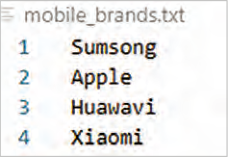
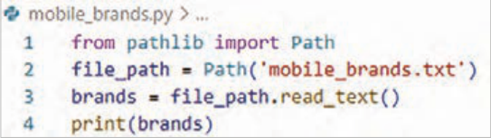
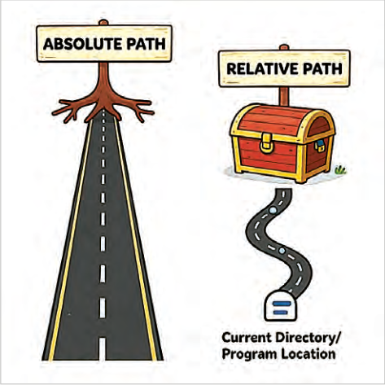
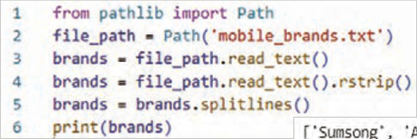
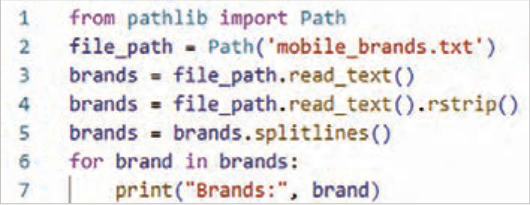
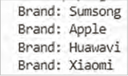
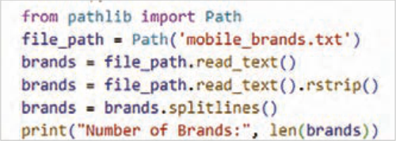
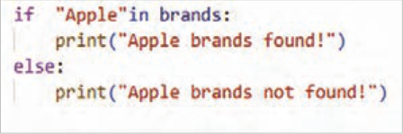

چرا نمیتوان همیشه از متغیرها برای نگهداری اطلاعات استفاده کرد؟
چه تفاوتی بین «ذخیره موقت اطلاعات در حافظه (RAM)» و «ذخیره در فایل» وجود دارد؟
اگر چند بار برنامه را اجرا کنید و هر بار در فایل بنویسید، چه اتفاقی برای محتوای قبلی میافتد؟
چه زمانی استفاده از فایل متنی ساده کافی است و چه زمانی بهتر است از JSON استفاده کنید؟
اگر مسیر فایل اشتباه باشد، برنامه چگونه باید رفتار کند؟
اگر قرار باشد یک برنامه فروشگاهی طراحی کنید، چه اطلاعاتی باید در فایل ذخیره شود و چرا؟
در پایان از هنرجو انتظار میرود
1 از کلاس "Path" و ماژول "pathlib" برای مدیریت مسیرها (PathObjects) استفاده کند.
2 محتوای فایلهای متنی را بخواند و دادهها را در آنها بنویسد، اضافه کند و فایلها را ایمن ببندد.
3 دادهها را از چندین فایل بخواند، محتوای آنها را ترکیب کند و با استفاده از حلقهها، مجموعهای از فایلها را پردازش نماید.
4 خطاهای رایج مانند "FileNotFoundError" و "ZeroDivisionError" را تشخیص داده و با استفاده از "try/except" از توقف برنامه جلوگیری کند و پیامهای خطای مناسب نمایش دهد.
5 ساختار "JSON" را درک کرده و دادهها را با استفاده از json.loads() بخواند و با json.dump() در فایل بنویسد.
استاندارد عملکرد
هنرجو باید بتواند با استفاده از شیء Path بهصورت ایمن و دقیق عملیات ایجاد، خواندن، نوشتن و مدیریت فایلهای متنی و JSON را انجام دهد و خطاها و استثناهای احتمالی را بهدرستی کنترل کند.
صفحه ۲۵۵
آشنایی با فایل در پایتون
در این واحد یادگیری با کار با فایلها و ذخیرهسازی دادهها آشنا میشوید تا برنامههای شما کاربردیتر و پایدارتر شوند. میآموزید چگونه دادهها را ذخیره و بازیابی کنید و با استفاده از مدیریت استثناها از توقف برنامه در شرایط غیرمنتظره جلوگیری نمایید.
همچنین با ماژول json آشنا خواهید شد که امکان نگهداری اطلاعات کاربران را فراهم میکند.
فرض کنید برنامهای برای ثبت مخاطبین یک تلفن همراه نوشتهاید. اگر برنامه را اجرا کنید و چند مخاطب وارد کنید، تا زمانی که برنامه باز است اطلاعات در حافظه نگهداری میشوند. اما اگر برنامه بسته شود، تمام اطلاعات از بین میروند.
برای اینکه اطلاعات بهصورت دائمی ذخیره شوند و بعداً بتوانید دوباره به آنها دسترسی داشته باشید، لازم است از فایلها استفاده کنید.
فایلها امکان ذخیره اطلاعات روی حافظه جانبی (مانند هارد دیسک) را فراهم میکنند.
شکل 18
کار با فایل اطلاعات زیادی در فایلهای متنی ذخیره میشوند؛ مثل نمرات دانشآموزان، لیست قیمتها، دادههای آب و هوا،ترافیک، یا متن یک داستان. برای اینکه یک برنامه بتواند از این اطلاعات استفاده کند، باید فایل را بخواند. اولین گام برای استفاده از یک فایل متنی، این است که فایل را وارد حافظه برنامه کنید، بعد از آن میتوانیدکل فایل را یکجا بخوانید یا آن را خطبهخط بررسی کنید. خواندن فایل به برنامه کمک میکند تا اطلاعات را تحلیل، نمایش یا تغییر دهد.
شکل 19
صفحه ۲۵۶
ایجاد فایل متنی ابتدا یک فایل متنی به نام mobile_bransd.txt بسازید و برندها را در آن بنویسید (هر برند دریک خط):
خواندن کل فایل در پایتون برای خواندن کل محتویات فایل از کتابخانه pathlib استفاده کنید.


شکل 20
توضیح کد:
from pathlib import Path
این خط کلاس Path را از کتابخانۀ pathlib وارد میکند. Path ابزاری برای کار با مسیر فایلها و پوشهها است و استفاده از آن سادهتر و امنتر از open معمولی است.
path = Path('mobile_brands.txt')
در اینجا path یک کلاس است که برای مدیریت مسیر فایلها ساخته شده است. با نوشتن:
path = Path('mobile_brands.txt')
یک نمونه (object) از کلاس Path ساخته میشود. این نمونه میداند که فایل mobile_brands.txt کجاست، ولی هنوز خود فایل باز نشده یا خوانده نشده به عبارت ساده: path فقط نشانی فایل روی رایانه را نگه میدارد.
وقتی مینویسید path.read_text() آن وقت فایل باز و خوانده میشود، یک Pathobject ساخته شده است که به فایل mobile_brands.txt اشاره میکند. چون این فایل در همان پوشهای است که فایل پایتون (.py) قرار دارد، فقط نام فایل کافی است. اگر فایل در پوشهای دیگر بود، باید مسیر کامل یا نسبی آن را بدهید.
brnds = path.read_text()
با متد read_text کل محتوای فایل خوانده میشود. نتیجه بهصورت یک رشته (string) در متغیر contents ذخیره میشود. هر خط فایل در رشته با کاراکتر \n جدا شده است.
صفحه ۲۵۷
محتویات brands درخروجی چاپ میشود.
print(brands)
خروجی مثال:
شکل 21
حذف خط خالی اضافی: گاهی read_text() یک خط خالی اضافی در انتهای فایل ایجاد میکند. برای حذف آن میتوانید از متد rstrip استفاده کنید.
brands = brands.rstrip()
حالا خروجی تمیز و بدون خط خالی نمایش داده میشود.
مسیرهای نسبی و مطلق فایلها آدرس نسبی و مطلق مانند داشتن یک نقشه دقیق برای دسترسی به فایلهای شماست. آدرس مطلق تضمین میکند که برنامه شما روی هر سیستمی، دقیقاً همان فایل را پیدا کند؛ اما آدرس نسبی به شما کمک میکند کدی بنویسید که بدون تغییر، در هر پوشهای جابجا شود و باز هم فایلهای مورد نیازش را بیابد.
وقتی نام فایلی مثل mobile_brands.txt را به Path میدهید، پایتون در پوشهای که فایل در حال اجرا (یعنی برنامه .py شما) در آن قرار دارد، جستجو میکند.گاهی اوقات، بسته به نحوه سازماندهی کارهایتان، فایلی که میخواهید باز کنید ممکن است در همان پوشه برنامه شما نباشد. مثلاًً، شاید برنامههایتان را در پوشهای به نام py_progs و داخل آن پوشهای به نام text_files برای جدا کردن فایلهای متنی از برنامهها نگهداری کنید. با اینکه text_files داخل py_progs است، اگر فقط نام فایلی را در text_files به Path بدهید، کار نمیکند؛ چون پایتون فقط در py_progs جستجو میکند و متوقف میشود؛ به text_files نگاه نمیکند. برای اینکه پایتون بتواند فایلها را از پوشهای غیر از پوشه برنامه شما باز کند، نیاز به مسیر صحیح دارید.

شکل 22
صفحه ۲۵۸
دو راه برای مشخص کردن مسیر فایلها در برنامهنویسی وجود دارد:
1 آدرس نسبی (RelativeFilePath): این آدرس به پایتون میگوید که مکان مورد نظر را نسبت به پوشه برنامه در حال اجرا پیدا کند. از آنجایی که text_files داخل py_progs است، باید مسیری بسازید که با پوشه text_files شروع شود و به نام فایل ختم شود. نحوه ساخت این مسیر اینگونه است:
path = Path('text_files/filename.txt')
2 آدرس مطلق (AbsoluteFilePath): در این نوع آدرس دهی شما میتوانید دقیقاً به پایتون بگویید فایل در کجای رایانه شما قرار دارد، صرف نظر از اینکه برنامه در حال اجرا کجاست. اگر آدرس نسبی کار نکرد، میتوانید از آدرس مطلق استفاده کنید. مثلاًً، اگر text_files را در پوشهای غیر از py_progs قرار دادهاید، دادن آدرس 'text_files/filename.txt' کافی نیست؛ چون پایتون آن را فقط داخل python_work جستوجو میکند. در این حالت، باید آدرس مطلق را بنویسید تا مشخص شود پایتون کجا را جستوجو کند. آدرسهای مطلق معمولاً بلندتر هستند، چون از پوشه ریشه سیستم عامل شروع میشوند:
با استفاده از آدرسهای مطلق، میتوانید فایلها را از هر نقطهای در سیستم خود بخوانید. برای شروع، سادهترین کار این است که فایلها را در همان پوشه برنامه خودتان یا در پوشهای مانند text_files درون پوشه برنامه نگهداری کنید.
نکته
سیستمهای ویندوز هنگام نمایش مسیر فایلها از بکاسلش () به جای اسلش (/) استفاده میکنند، اما شما همیشه در کد خود از اسلش (/ ) استفاده کنید، حتی در ویندوز. کتابخانه pathlib به طور خودکار هنگام تعامل با سیستم عامل شما، نمایش صحیح مسیر را به کار میگیرد.
کار با محتویات فایل بعد از خواندن فایل متنی، محتوای آن در برنامه بهصورت یک رشته (string) در اختیارشما قرار میگیرد.
تبدیل محتوا به لیست: برای اینکه بتوانید روی هر برند تلفن همراه جداگانه کارکنید، لازم است متن فایل را به لیستی از خطوط تبدیل کنید.
حالا هر برند یک عضو از لیست است و میتوانید با آن کارکنید.
-)(splitlines رشته متنی را به لیستی از خطوط تقسیم میکند.

شکل 23
صفحه ۲۵۹


شکل 24
شمارش دادهها: مثلاً تعداد برندهای موجود در فایل:

شکل 25
فعالیت
برنامه را به نحوی تغییر دهید که بتوانید تعداد کاراکترهای هر برند را مشاهده کنید.
جستوجو در محتویات فایل بررسی اینکه آیا یک برند خاص در فایل وجود دارد یا نه:

شکل 26
Object-oriented program development
Page 254
Learning unit 2
Object-oriented program development
Have you ever thought
Why can you not always use variables to store information?
What is the difference between “temporary storage of information in memory (RAM)” and “storage in a file”?
If you run the program several times and write to the file each time, what happens to the previous content?
When is using a simple text file enough, and when is it better to use JSON?
If the file path is wrong, how should the program behave?
If you are going to design a store program, what information should be stored in a file, and why?
By the end, the student is expected to
1 Use the "Path" class and the "pathlib" module to manage paths (PathObjects).
2 Read the contents of text files and write data to them, append data, and close files safely.
3 Read data from several files, combine their contents, and process a set of files using loops.
4 Recognize common errors such as "FileNotFoundError" and "ZeroDivisionError" and, using "try/except", prevent the program from stopping and display appropriate error messages.
5 Understand the "JSON" structure and read data using json.loads() and write it to a file with json.dump().
Performance standard
The student should be able to use a Path object to create, read, write, and manage text and JSON files safely and accurately, and to handle possible errors and exceptions correctly.
Page 255
Getting to know files in Python
In this learning unit you get to know working with files and storing data so that your programs become more useful and more reliable. You learn how to store and retrieve data and how, by managing exceptions, you can keep the program from stopping in unexpected situations.
You will also get to know the json module, which makes it possible to keep user information.
Suppose you have written a program to record the contacts of a mobile phone. If you run the program and enter a few contacts, the information is kept in memory as long as the program is open. But if the program is closed, all the information is lost.
For the information to be stored permanently so you can access it again later, you need to use files.
Files make it possible to store information on secondary storage (such as a hard disk).
Figure 18
Working with files A great deal of information is stored in text files; for example, students’ grades, price lists, weather data, traffic, or the text of a story. For a program to be able to use this information, it must read the file. The first step in using a text file is to bring the file into the program’s memory; after that you can read the whole file at once or examine it line by line. Reading a file helps the program analyze, display, or change the information.
Figure 19
Page 256
Creating a text file First create a text file named mobile_bransd.txt and write the brands in it (each brand on one line):
Reading the whole file In Python, use the pathlib library to read the entire contents of a file.
Figure 20
Code explanation:
from pathlib import Path
This line imports the Path class from the pathlib library. Path is a tool for working with the paths of files and folders, and using it is simpler and safer than ordinary open.
path = Path('mobile_brands.txt')
Here path is a class built for managing file paths. By writing:
path = Path('mobile_brands.txt')
an instance (object) of the Path class is created. This instance knows where the file mobile_brands.txt is, but the file itself has not yet been opened or read. In simple terms: path only holds the address of the file on the computer.
When you write path.read_text(), then the file is opened and read; a Pathobject has been created that points to the file mobile_brands.txt. Because this file is in the same folder as the Python file (.py), only the file name is enough. If the file were in another folder, you would have to give its full or relative path.
brnds = path.read_text()
With the read_text method, the entire contents of the file are read. The result is stored as a string (string) in the variable contents. Each line of the file in the string is separated by the character \n.
Page 257
The contents of brands are printed in the output.
print(brands)
Example output:
Figure 21
Removing an extra blank line: Sometimes read_text() creates an extra blank line at the end of the file. To remove it you can use the rstrip method.
brands = brands.rstrip()
Now the output is displayed clean and without a blank line.
Relative and absolute file paths Relative and absolute addresses are like having an accurate map for reaching your files. An absolute address guarantees that your program finds exactly the same file on any system; but a relative address helps you write code that can be moved to any folder without change and still find the files it needs.
When you give a file name such as mobile_brands.txt to Path, Python searches in the folder where the file that is running (that is, your .py program) is located. Sometimes, depending on how you organize your work, the file you want to open may not be in the same folder as your program. For example, you might keep your programs in a folder named py_progs and inside it a folder named text_files to keep text files separate from the programs. Although text_files is inside py_progs, if you give only the name of a file in text_files to Path, it does not work; because Python searches only in py_progs and stops; it does not look into text_files. For Python to be able to open files from a folder other than your program folder, you need the correct path.
Figure 22
Page 258
There are two ways to specify file paths in programming:
1 Relative address (RelativeFilePath): This address tells Python to find the desired location relative to the folder of the program that is running. Since text_files is inside py_progs, you must build a path that starts with the text_files folder and ends with the file name. You build this path like this:
path = Path('text_files/filename.txt')
2 Absolute address (AbsoluteFilePath): In this kind of addressing you can tell Python exactly where the file is on your computer, regardless of where the program that is running is. If a relative address does not work, you can use an absolute address. For example, if you have placed text_files in a folder other than py_progs, giving the address 'text_files/filename.txt' is not enough; because Python searches for it only inside python_work. In this case, you must write the absolute address so that it is clear where Python should search. Absolute addresses are usually longer, because they start from the root folder of the operating system:
Using absolute addresses, you can read files from any point on your system. To start, the simplest thing is to keep the files in the same folder as your program, or in a folder such as text_files inside the program folder.
Note
Windows systems use a backslash () instead of a slash (/) when displaying file paths, but you should always use a slash (/) in your code, even on Windows. The pathlib library automatically uses the correct path display when interacting with your operating system.
Working with file contents After reading a text file, its contents are available to the program as a string (string).
Converting the content to a list: So that you can work with each mobile phone brand separately, you need to turn the file text into a list of lines.
Now each brand is one member of the list and you can work with it.
splitlines() splits the text string into a list of lines.
Figure 23
Page 259
Figure 24
Counting data: for example, the number of brands in the file:
Figure 25
Activity
Change the program so that you can see the number of characters in each brand.
Searching in the file contents Checking whether a particular brand exists in the file or not: